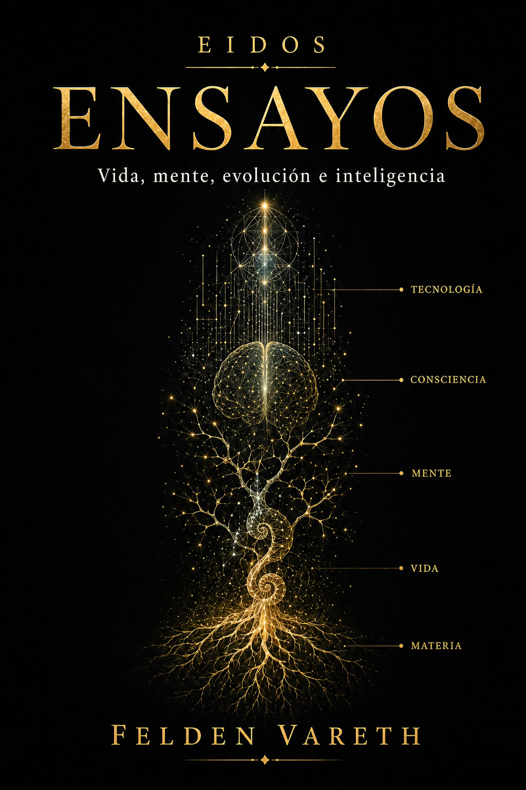

En junio de 2026, un grupo de investigadores colocó un pequeño traje de buceo a una cucaracha. La envoltura protegía del agua las zonas necesarias para respirar y un generador químico le suministraba oxígeno. Dentro del abdomen llevaba el controlador electrónico y la batería que permitían orientar parte de sus movimientos.
El animal podía caminar bajo el agua durante horas, regresar a tierra firme y atravesar una rendija de dos centímetros. Sus patas, músculos y reflejos venían incorporados de serie. La tecnología ampliaba las posibilidades de un cuerpo que ya sabía moverse.
Durante décadas hemos construido máquinas inspiradas en los seres vivos. Copiamos alas, articulaciones, pieles flexibles y formas de orientarse. La biomimética estudia esas soluciones y las adapta a problemas de ingeniería. Los sistemas biohíbridos aprovechan otra posibilidad: incorporar directamente al organismo.
¿Por qué construir un robot completo cuando la evolución ya ha construido el cuerpo que necesitamos?
La idea permite fabricar dispositivos pequeños con capacidades difíciles de reproducir artificialmente. También obliga a intervenir sobre animales vivos y a trabajar con su autonomía. Al seguir estos experimentos acabamos llegando a las prótesis humanas, donde una máquina puede participar en el movimiento, devolver tacto y entrar en la experiencia que una persona tiene de su propio cuerpo.
Construir con la evolución
Un cuerpo que ya sabe caminar
Construir un robot pequeño que avance por un suelo irregular es más difícil de lo que parece. Hay que diseñar actuadores, articulaciones, transmisión de fuerza, sensores, control de equilibrio, alimentación eléctrica y algoritmos capaces de decidir dónde colocar cada apoyo. Al reducir el tamaño aparecen además problemas nuevos. Las baterías ocupan una fracción importante del volumen, se reduce el espacio disponible para los actuadores, cualquier piedra se convierte en un obstáculo y una grieta que para nosotros resulta insignificante puede ser una pared.
Una cucaracha llega al laboratorio con gran parte de ese trabajo resuelto.
Posee seis patas coordinadas, exoesqueleto, músculos, sensores mecánicos y químicos, reflejos, capacidad de desplazarse por superficies complejas y una forma corporal construida para atravesar espacios reducidos. Gran parte de la coordinación de cada pata queda en manos de su propio sistema nervioso. La tecnología añade otra capa. Electrodos colocados en estructuras sensoriales permiten introducir estímulos que modifican la dirección del movimiento. El operador envía una señal que influye sobre el animal, y el propio organismo resuelve gran parte de la ejecución.
El dispositivo introduce una indicación en un sistema que ya se mueve. La respuesta depende de la especie, del estado del animal y de las condiciones del terreno; orientar al insecto exige observar esa respuesta y ajustar la estimulación. De ahí nombres como robots biohíbridos, insectos cíborg o biorrobots. La terminología varía porque describe una frontera nueva: un sistema formado a la vez por un organismo vivo y por componentes tecnológicos.
Un organismo crece a partir de nutrientes y puede reparar parte de los daños que sufre. El insecto obtiene de los alimentos la energía para moverse; la radio y los sensores necesitan su propia alimentación. Aprovechar esa organización biológica reduce lo que hay que fabricar, aunque obliga a mantener al animal en condiciones de vivir y trabajar.
En El cuerpo de la inteligencia examinábamos cómo una mano blanda puede adaptarse a un objeto gracias a sus materiales. En un insecto, la ayuda corporal incluye reflejos y circuitos locales, además de la mecánica. El controlador aprovecha una relación entre cuerpo y entorno que funcionaba mucho antes de que lo conectáramos.
La máquina dentro del abdomen
La mochila electrónica introducía un inconveniente fácil de ver. Una cucaracha podía caber bajo una superficie y quedarse detenida porque el equipo sobresalía de su cuerpo. El dispositivo también podía engancharse o recibir golpes. Se perdía parte de la ventaja que había llevado a elegir aquel animal.
En mayo de 2026, Kazuki Kai y sus colaboradores publicaron un controlador que podía implantarse en el abdomen junto con su batería. El controlador medía 10 × 10 × 3,5 mm y pesaba 0,5 g, sin contar la batería. Lo alimentaba una batería de polímero de litio de 9 mAh. La distribución interna conservaba mejor el perfil del insecto y mejoraba su paso por varios de los obstáculos estudiados.
En la radiografía del estudio se distinguen el controlador y la batería dentro del contorno del insecto: formas geométricas alojadas en un cuerpo que sigue utilizando sus músculos y articulaciones. Los electrodos conectan ese equipo con las estructuras sobre las que se aplica la estimulación; una misión concreta puede requerir además cámaras u otros sensores.
Al añadir tecnología a un organismo, la ubicación importa tanto como el peso. Una carga sobre el dorso cambia la estabilidad y la altura del conjunto. Introducirla en el abdomen conserva algunas ventajas de la anatomía, a costa de una intervención invasiva. El mismo estudio examinó la supervivencia después del implante durante un seguimiento de hasta 120 días.
En la primera serie, cuatro de las siete cucarachas murieron durante la primera semana; las tres restantes sobrevivieron más de ochenta días. Los autores relacionaron la elevada mortalidad inicial con posibles daños internos durante la inserción y modificaron el procedimiento. En una segunda serie, seis de siete animales superaron los cincuenta días. Son grupos pequeños y tiempos de supervivencia distintos. Los resultados sugieren una posible mejora del procedimiento que necesita confirmación: la diferencia de supervivencia a siete días no alcanzó significación estadística. También queda abierta su comparación a largo plazo con animales sin implantar.
Un traje de buceo para un insecto
El agua planteaba otro problema. Las cucarachas respiran mediante espiráculos, aberturas conectadas a una red de tráqueas que distribuye los gases por el cuerpo. Para mantenerlas activas durante una inmersión había que proteger ese intercambio y suministrar oxígeno.
El equipo de NTU y Waseda diseñó una envoltura flexible e impermeable, adaptada al insecto. Un generador químico utilizaba peróxido de hidrógeno —agua oxigenada— y dióxido de manganeso como catalizador. El oxígeno liberado se conducía por pequeños tubos hasta la zona de los espiráculos torácicos. La combinación permitía mantener una atmósfera respirable alrededor de las aberturas protegidas.
En las pruebas publicadas en junio de 2026, los animales pudieron mantenerse activos y desplazarse bajo el agua hasta tres horas. Los investigadores ensayaron también recorridos con agua y ambientes con dióxido de carbono. Eran condiciones controladas, diseñadas para estudiar obstáculos que podrían aparecer en espacios inundados o con poco oxígeno.
La comparación con un traje de buceo es bastante literal. El sistema lleva al animal una parte del entorno que necesita para seguir vivo. Un traje espacial cumple una función semejante con el cuerpo humano: mantiene condiciones compatibles con nuestra fisiología mientras nos movemos fuera del ambiente en el que podemos sobrevivir sin ayuda.
En ambos casos, la capacidad de actuar depende de la cooperación entre el cuerpo y su equipo. El organismo conserva su fisiología, y el dispositivo amplía temporalmente los lugares a los que puede acceder. Para una cucaracha de rescate, cruzar una zona inundada podría permitir continuar una exploración que de otro modo terminaría allí. Una discontinuidad pequeña para nosotros puede decidir hasta dónde llega un insecto y cuánto terreno queda sin explorar.
Bibliografía de esta sección
NTU Singapore — 3D-printed suit for cyborg insects extends operations underwater (2026)
Del laboratorio al mundo real
Entre los escombros
La utilidad más inmediata de estas investigaciones aparece después de un terremoto, una explosión o el colapso de un edificio. Un espacio de rescate es casi el escenario contrario al que prefiere la ingeniería convencional: geometría impredecible, polvo, oscuridad, materiales inestables, huecos irregulares, agua, obstáculos y comunicaciones difíciles. Un vehículo con ruedas puede quedar detenido por una pieza de hormigón. Un dron necesita espacio para sus hélices y genera corrientes de aire. Un robot con patas puede superar algunos obstáculos, pero cuanto más pequeño debe ser, más difícil resulta incluir motores, batería y sensores suficientes.
Las cucarachas llevan millones de años moviéndose por entornos estrechos, oscuros y desordenados. El 30 de marzo de 2025, diez cucarachas cíborg desarrolladas por el equipo de NTU viajaron a Myanmar con el contingente de la Singapore Civil Defence Force tras el terremoto de magnitud 7,7 ocurrido dos días antes. Según NTU, fue la primera utilización de este tipo de insectos en una operación humanitaria real.
Los ejemplares desplegados pertenecían todavía a la generación de mochila externa, diseñada para llevar sensores a huecos inaccesibles para una persona o un robot mayor. La información publicada por NTU describe su participación en Myanmar y las lecciones para futuros despliegues, pero no ofrece un balance que permita medir su eficacia para encontrar supervivientes. Una de las necesidades señaladas por el equipo fue preparar muchos individuos con rapidez: el montaje manual podía requerir más de una hora por insecto.
Fabricar un enjambre
En julio de 2025, el mismo grupo presentó un sistema robotizado capaz de instalar la mochila electrónica y los electrodos en una cucaracha de Madagascar en aproximadamente un minuto y ocho segundos. Utiliza visión artificial para identificar los puntos anatómicos de inserción y colocar los componentes. Según NTU, el montaje de cuatro insectos se completó en menos de ocho minutos. El equipo también desarrolló una mochila que necesitaba menos voltaje para producir la estimulación.
Preparar muchos individuos en poco tiempo permitiría explorar varios accesos a la vez. La disponibilidad del grupo dependería también de los cuidados, la revisión del equipo y la fiabilidad del montaje. El ahorro de tiempo tendría que mantenerse sin aumentar las lesiones ni las intervenciones que deben repetirse.
El coste de una cibercucaracha incluye mucho más que el animal: electrónica, sensores, preparación y mantenimiento. Estos prototipos no ofrecen una tarifa comercial comparable por unidad. La automatización puede abaratar el montaje, pero el precio de una misión depende también del personal, las comunicaciones y la recuperación del equipo. La evolución ha producido ese cuerpo; la ingeniería asume el coste de intervenir sobre él, conectarlo y añadir las funciones que necesita.
La lógica se parece cada vez más a la de una flota. Un enjambre puede repartir funciones: unos individuos transportan cámaras, otros sensores térmicos o detectores químicos, y otros pueden actuar como nodos de comunicaciones. La pérdida de un individuo tampoco implica necesariamente la pérdida de toda la misión. La robótica de enjambres lleva años estudiando cómo grupos de agentes relativamente simples cubren un área, reparten tareas o mantienen una red distribuida. En estos proyectos, cada animal conserva su locomoción mientras la coordinación tecnológica intenta orientar el trabajo del grupo.
Cucarachas que llevan medicina
En agosto de 2026, investigadores de la University of Queensland y de UNSW publicaron los llamados Paraborgs, basados en la gran cucaracha excavadora australiana, Macropanesthia rhinoceros. Su tamaño y fuerza permiten transportar una cámara o un pequeño mecanismo de inyección.
La propuesta combina un insecto que ofrece imagen al operador con otro que lleva el inyector. En el ensayo de laboratorio, la secuencia de navegación, posicionamiento e inyección alcanzó aproximadamente un 72 % de éxito. En las pruebas de inyección a corta distancia, de hasta quince centímetros, el éxito llegó al 95 %. Las cifras corresponden a condiciones experimentales diferentes y todavía no permiten estimar la eficacia de una intervención sobre una persona atrapada.
Los investigadores ensayaron el mecanismo de inyección sobre silicona y piel porcina. Antes de una intervención médica real quedarían por resolver cuestiones de navegación, identificación del paciente, esterilidad y dosificación. Llegar cerca del objetivo tampoco basta: el animal debe quedar orientado y estable para que el inyector pueda actuar.
Los propios investigadores plantean enjambres especializados. Una parte localizaría a las víctimas; otra llevaría equipos médicos o sensores ambientales. Las decisiones críticas seguirían en manos humanas y el sistema ampliaría el alcance físico del rescatador.
¿Son animales desechables?
En los sistemas con mochila externa, el equipo puede desmontarse al terminar su uso. NTU afirma que sus módulos pueden retirarse durante periodos largos de descanso o cuando el insecto deja de utilizarse, sin efectos adversos por esa retirada. El equipo australiano de los Paraborgs también utiliza arneses desmontables y señala que los animales pueden vivir tanto como otros ejemplares después de quitárselos. Son afirmaciones de los equipos sobre sus propios procedimientos.
La posibilidad de retirar una mochila dice poco sobre las lesiones de los electrodos, la recuperación posterior o el destino del animal. Los implantes abdominales añaden la cirugía y la mortalidad que hemos visto. Evaluar estas técnicas exige observar cómo se alimenta y se mueve el insecto después de la intervención, además de cuánto tiempo sobrevive.
En una misión real importa también si se consigue recuperar a los animales. Que el equipo sea desmontable en el laboratorio no garantiza que pueda retirarse de un insecto perdido entre los escombros. Ese destino forma parte del coste de utilizar seres vivos como dispositivos de exploración.
Bibliografía de esta sección
NTU Singapore — AI-powered robot assembles search and rescue cyborg insects (2025)
University of Queensland — Paramedic cockroaches: cyborg care when rescuers can’t reach (2026)
Cuando el animal se convierte en tecnología
Más allá de las cucarachas
La combinación de animales y electrónica abarca muchas más especies. Se han utilizado escarabajos voladores para estudiar control remoto del despegue, aterrizaje y dirección. En trabajos como los desarrollados por Hirotaka Sato y sus colaboradores en Berkeley se instalaron pequeños sistemas electrónicos y electrodos capaces de actuar sobre músculos y estructuras relacionadas con el vuelo. Un escarabajo aporta a un microdispositivo sus alas, músculos y control aerodinámico: un sistema de vuelo biológico completo sobre el que la electrónica puede intervenir.
También se ha experimentado con polillas. Algunos proyectos aprovecharon incluso la metamorfosis: se introdujeron interfaces durante la fase de pupa para que determinadas conexiones permanecieran disponibles después de que emergiera el insecto adulto. En el proyecto DragonflEye, Draper y el centro Janelia del HHMI investigaron cómo combinar electrónica miniaturizada con estimulación óptica de neuronas relacionadas con el vuelo de las libélulas.
Las langostas permiten explorar otra posibilidad: incorporar al dispositivo el propio sentido del animal.
Cuando el animal es el sensor
Hemos construido dispositivos que realizan funciones comparables a las de nuestros órganos: cámaras que captan imágenes, micrófonos que registran sonidos, actuadores que producen movimiento. Aquí se conserva el sistema sensorial del animal y se construye una interfaz para leer su actividad.
Podemos construir un sensor artificial o aprender a leer electrónicamente un sentido que la evolución ya ha construido.
La diferencia conceptual aparece con claridad al comparar una cámara colocada sobre una cucaracha con el olfato de una langosta conectado a electrodos. En el primer caso, el animal transporta un sensor diseñado por nosotros. En el segundo, sus propios receptores químicos, sus neuronas y parte del procesamiento forman el sensor. Los investigadores añaden registro y decodificación. En los experimentos de Washington University, las langostas distinguieron vapores asociados a TNT, DNT, RDX, PETN y nitrato de amonio, y las respuestas neuronales podían diferenciarse en unos pocos cientos de milisegundos.
Para que el conjunto funcione como instrumento hay que estudiar su estabilidad, las diferencias entre individuos y las posibles confusiones entre olores. La interfaz hace accesible una capacidad biológica que sigue perteneciendo a un ser vivo.
La distinción entre organismo y dispositivo también aparece si volvemos a la cucaracha de rescate y preguntamos qué es exactamente lo que actúa. Biológicamente hay una cucaracha; para la misión existe un sistema formado por el animal, los sensores, el software, las comunicaciones y el operador. Si alguno de esos elementos falla, la función que perseguíamos puede desaparecer aunque la cucaracha siga viva. La identidad del organismo y la continuidad del sistema funcional obedecen a criterios distintos. Esta separación apenas nos desconcierta al hablar de un insecto. Más adelante, cuando traslademos la cuestión a una persona con dispositivos conectados a su sistema nervioso, la distinción dejará de parecer tan sencilla.
Tierra, aire y agua
Caltech ha desarrollado medusas biónicas destinadas a la exploración oceánica. Pequeños dispositivos electrónicos estimulan su natación y una estructura añadida sobre la campana permite transportar sensores. Su locomoción permite estudiar una plataforma de bajo consumo para transportar instrumentos, aunque la carga modifica las condiciones en las que nada.
También existen ratas cíborg. Investigaciones publicadas desde principios de este siglo han implantado microelectrodos en regiones cerebrales capaces de producir señales que el animal aprende a interpretar como indicaciones de dirección y recompensa. En 2019 se llegó incluso a demostrar una interfaz cerebro a cerebro en la que señales extraídas de una persona se convertían en comandos enviados a una rata equipada con estimulación neuronal.
Las palomas representan otro paso. Distintos grupos han estudiado cómo influir mediante estimulación cerebral en la dirección del vuelo, registrar posición con GPS y estudiar estrategias de corrección de trayectoria a partir de esos registros.
El grado de desarrollo varía mucho entre proyectos. Una paloma orientada durante un ensayo está lejos de una flota de aves realizando misiones autónomas. La diversidad de trabajos muestra, aun así, que la elección del cuerpo determina buena parte de lo que puede hacer el sistema: el vuelo, el acceso a túneles o la permanencia en el agua dependen de capacidades biológicas diferentes.
Aprovechar un organismo también obliga a trabajar con sus necesidades y con las diferencias entre individuos. El entorno, la fiabilidad necesaria y el coste condicionan qué cuerpos pueden servir para cada misión.
La otra cara del rescate
Una tecnología concebida para localizar a una persona bajo los escombros también podría emplearse para observar un espacio privado o inaccesible. Un insecto pequeño reúne características atractivas para una misión de vigilancia: resulta difícil de detectar, genera poco ruido, puede esconderse en espacios estrechos y aprovecha sus propios músculos para desplazarse, reduciendo la energía eléctrica necesaria para la locomoción. Si además transporta cámara, micrófono, sensor químico o enlace de radio, el sentido de la tecnología depende principalmente de quién la envía y para qué.
La relación entre investigación biohíbrida y defensa tiene precedentes claros. DARPA impulsó durante la década de 2000 el programa HI-MEMS, Hybrid Insect Micro-Electro-Mechanical Systems, destinado a explorar la integración de sistemas microelectromecánicos con insectos. Parte de los trabajos posteriores con vuelo controlado y sensores surgió dentro de ese ecosistema de investigación. El estudio de las langostas capaces de detectar explosivos recibió financiación de la Office of Naval Research de Estados Unidos. Una capacidad presentada como detección y seguridad puede tener al mismo tiempo relevancia militar.
Es el problema del doble uso. Localizar personas, detectar gases, inspeccionar túneles, cartografiar interiores, transportar pequeñas cargas y mantener sensores donde un humano tiene difícil acceso son funciones valiosas en un terremoto, una mina, un incendio industrial o una guerra. El propósito de la misión determina qué información se obtiene y sobre quién se interviene.
Bibliografía de esta sección
Draper — Equipping Insects for Special Service: proyecto DragonflEye (2017)
Caltech — Building Bionic Jellyfish for Ocean Exploration (2024)
Yu, Y. et al. — Automatic Training of Rat Cyborgs for Navigation (2016)
Global Positioning System-Based Stimulation for Robo-Pigeons in Open Space (2017)
El problema ético
Las cucarachas despiertan poca empatía. Es fácil aceptar sobre ellas procedimientos que nos resultarían perturbadores en un perro o un primate. Esa diferencia en nuestra reacción influye en lo que estamos dispuestos a permitir, aunque aporta poca información sobre lo que experimenta el animal.
En los insectos conocemos mecanismos de nocicepción, capaces de detectar estímulos dañinos y producir respuestas. Determinar qué formas de experiencia pueden acompañarlos es más difícil. La incertidumbre importa al evaluar lesiones, intensidad de la estimulación y duración de los procedimientos. También obliga a observar algo más que la capacidad del animal para cumplir la tarea asignada.
La normativa establece distinciones entre grupos. La Directiva europea 2010/63/UE sobre animales utilizados con fines científicos incluye, junto con los vertebrados contemplados en su ámbito, a los cefalópodos vivos. Es una diferencia relevante dentro de los invertebrados: un pulpo y una cucaracha reciben un tratamiento distinto en ese marco. Las categorías jurídicas delimitan obligaciones, mientras la investigación sigue examinando las capacidades de cada especie.
La cercanía biológica que hace útiles a muchos vertebrados para estudiar nuestro cuerpo también vuelve más difícil ignorar las consecuencias de utilizarlos. Esa semejanza puede aumentar nuestra preocupación, aunque la capacidad de sufrir de un animal no dependa de cuánto nos reconozcamos en él.
El atractivo tecnológico del organismo y el problema ético proceden del mismo lugar. Elegimos un animal porque se mueve, percibe, obtiene energía y responde al entorno con una eficacia que cuesta reproducir. El componente más sofisticado del sistema sigue siendo un ser vivo. Sus capacidades se desarrollaron en relación con su propia supervivencia; nosotros las incorporamos a una misión que le es ajena.
La condición de ser vivo que hace útil al animal es también la que obliga a considerar qué le estamos haciendo.
¿Aceptaríamos utilizar cien insectos implantados para localizar a una persona sepultada? ¿Aceptaríamos la misma intervención para vigilar una habitación? Al cambiar la finalidad, cambia nuestra valoración de un procedimiento técnicamente idéntico. Si los animales fueran ratas o palomas, tendríamos además que considerar otras evidencias sobre dolor, aprendizaje y conducta.
Anestesiar durante una intervención, reducir la estimulación y retirar el equipo cuando sea posible son medidas importantes. La evaluación empieza antes, al decidir si el uso está justificado y si una alternativa podría cumplir la misma función con menos daño. La ética acompaña a la ingeniería desde que escogemos el organismo que va a formar parte del dispositivo.
Imaginemos que la tecnología mejora hasta conseguir intervenciones que no producen daños detectables. El animal continúa alimentándose, moviéndose y viviendo tanto como otros de su especie. Esos resultados contarían a favor del procedimiento, pero su alcance dependería de lo que hayamos medido y de la sensibilidad de nuestras pruebas. No detectar daño y poder afirmar que no existe sufrimiento son cosas distintas. La primera afirmación describe el resultado de una observación; la segunda se refiere a lo que el animal experimenta. La supervivencia y la capacidad de cumplir una tarea, por sí solas, no permiten dar ese salto.
La incertidumbre tampoco demuestra que el animal esté sufriendo. Nos obliga a preguntarnos qué evidencias consideraríamos suficientes para autorizar la intervención y cuánto riesgo de equivocarnos aceptaríamos. ¿Bastaría con que nadie hubiera demostrado sufrimiento, o deberíamos exigir razones positivas para considerar improbable que lo produzca el procedimiento? La respuesta afecta a quién debe justificar el uso y a qué alternativas estaríamos dispuestos a probar antes. Esa exigencia tendría que guardar relación con los indicios disponibles, el daño posible y la finalidad de la intervención.
Podemos llevar el argumento un paso más lejos y suponer, solo para examinar el problema moral, que realmente pudiéramos garantizar la ausencia de sufrimiento y de otros perjuicios. ¿Quedaría entonces justificado utilizar al animal? Para algunas posiciones éticas, eliminar esos perjuicios resolvería la objeción principal. Otras concederían valor a que el organismo pudiera desarrollar su vida y su conducta sin quedar subordinado a objetivos ajenos. ¿Es suficiente garantizar su bienestar para convertirlo en un instrumento? Aquí la discrepancia ya no depende de lo que podamos medir, sino de qué obligaciones creemos tener hacia otros seres vivos.
Bibliografía de esta sección
Gibbons, M., Sarlak, S. y Chittka, L. — Descending control of nociception in insects? (2022)
NTU Singapore — AI-powered robot assembles search and rescue cyborg insects (2025)
University of Queensland — Paramedic cockroaches: cyborg care when rescuers can’t reach (2026)
De los animales a nosotros
Una mano que devuelve el tacto
En los sistemas anteriores, una persona establece la tarea y utiliza tecnología para intervenir sobre otro organismo. Las neuroprótesis humanas conectan dispositivos con la intención de su propio usuario. Una persona con parálisis puede aprender a controlar un cursor o un brazo robótico a partir de señales registradas en su cerebro.
El implante coclear ofrece un antecedente conocido de esa relación con el sistema nervioso. Un micrófono recoge sonidos, un procesador los convierte en señales y unos electrodos estimulan el nervio auditivo. Con aprendizaje, muchas personas pueden interpretar esas señales como sonidos y habla. La audición obtenida tiene características propias y los resultados varían entre usuarios.
Las interfaces cerebro-computadora aprovechan patrones de actividad asociados, por ejemplo, al intento de mover una extremidad. Unos electrodos registran parte de esa actividad y un programa aprende a relacionarla con acciones. La intención de alcanzar un objeto puede traducirse así en una orden para una mano artificial. El funcionamiento depende del entrenamiento, de la calidad de la señal y de la estabilidad de la interfaz.
Neuralink es uno de los proyectos conocidos en este campo, con hilos implantados que registran actividad neuronal. Otras aproximaciones, como la de Synchron, acceden al registro desde un dispositivo situado en un vaso sanguíneo próximo a regiones motoras. Los equipos académicos llevan años estudiando soluciones diversas. Las diferencias entre ellas afectan a la cirugía, a la información que pueden captar y a las condiciones de uso.
El movimiento es solo una parte de la relación con una mano. Al abrocharnos una camisa, el tacto y la información sobre la posición de los dedos nos ayudan a ajustar el movimiento. Esa información permite manejar el botón sin tener que observar cada detalle. Una prótesis que carece de retorno sensorial obliga al usuario a apoyarse mucho más en la vista.
En el programa de neuroprótesis de la Universidad de Pittsburgh se han combinado registros de la corteza motora con estimulación de la corteza somatosensorial. Los sensores de una mano robótica detectan el contacto y el sistema lo convierte en estimulación cerebral. Un participante pudo identificar qué dedo robótico había sido tocado mientras permanecía con los ojos vendados.
Ese retorno permite construir un circuito de acción y percepción. La persona intenta mover la mano, el dispositivo responde y el contacto vuelve a ella como información sensorial. Su aprendizaje incluye tanto el control del movimiento como la interpretación de lo que recibe. La mano artificial puede empezar a ocupar un lugar estable en sus tareas cotidianas.
Hay también sistemas destinados a recuperar movimientos del propio cuerpo. Una lesión puede interrumpir la comunicación entre el cerebro y los circuitos que permiten mover una mano, aunque la intención de hacerlo permanezca. Estas interfaces buscan establecer una vía alternativa mediante el registro de señales cerebrales y la estimulación del sistema nervioso.
Un estudio publicado en Nature Medicine en julio de 2026 describió una neuroprótesis que enlazaba una interfaz cerebral con estimulación de la médula y de la corteza. En un participante con tetraplejia completa permitió controlar movimientos de su mano y mejorar su capacidad para realizar tareas cotidianas. Se observaron además mejoras persistentes en determinadas funciones motoras y sensitivas, incluso con el sistema apagado.
Se trata de un resultado en una persona, que requiere más investigación para conocer su alcance. El trabajo combina asistencia inmediata y mecanismos orientados a favorecer la neuroplasticidad. La tecnología participa así en el movimiento mientras se estudia su capacidad de ayudar a reorganizar funciones nerviosas a lo largo del entrenamiento.
Reparar o ampliar
Para alguien que ha perdido movilidad, comunicarse o utilizar una mano puede cambiar su autonomía diaria. La utilidad médica de estas interfaces se aprecia en tareas concretas: escoger una palabra en una pantalla, sostener un objeto o acercarse comida a la boca. La investigación debe resolver, además, cómo mantener esas capacidades durante meses y años, fuera del entorno controlado del laboratorio.
Las mismas técnicas permiten estudiar el control de dispositivos adicionales. La investigación sobre efectores supernumerarios explora la coordinación de extremidades robóticas extra mientras se mantiene el uso de las naturales. Un trabajo publicado en Nature Communications en 2026 estudió una interfaz no invasiva en diez participantes sin discapacidad motora. Registraba mediante electroencefalografía las respuestas a estímulos táctiles a los que el usuario prestaba atención. El sistema permitió ensayar el control de brazos robóticos adicionales mientras los participantes utilizaban sus brazos naturales.
Aprender a utilizar una extremidad adicional exige resolver cómo se dan las órdenes y cuánto interfiere esa tarea con los movimientos habituales. La capacidad de manejar un dispositivo durante un ensayo tampoco significa que vaya a sentirse como una parte del cuerpo. Una persona puede manejar con destreza una herramienta y seguir percibiéndola como algo externo; la incorporación a la experiencia corporal exige observar qué siente y cómo se relaciona con ella.
Podrían añadirse también canales sensoriales. Una cámara infrarroja o un detector químico ofrecen información que nuestros sentidos captan de otra forma o dejan fuera de su alcance. El trabajo pendiente consiste en decidir cómo presentar esas señales al usuario, qué puede aprender a distinguir y cuánto esfuerzo requiere interpretarlas. Disponer de un sensor mejor es solo una parte de ese proceso.
La ampliación corporal introduciría decisiones sobre acceso, mantenimiento y dependencia de los fabricantes. Una función utilizada a diario necesitaría soporte, reparaciones y garantías de continuidad. Para su usuario, una avería o una actualización defectuosa podría afectar directamente a la manera de moverse o percibir. La experiencia de tener un cuerpo tecnológicamente ampliado incluiría esa dependencia material.
Una persona podría recuperar autonomía para comer, trabajar o salir de casa y depender a la vez de una empresa para conservar esas capacidades. Si el fabricante dejara de mantener el dispositivo, ¿qué garantías debería tener quien lo utiliza? Cuando una tecnología participa a diario en el movimiento o la percepción, decidir sobre su reparación y continuidad afecta al control que esa persona conserva sobre su propio cuerpo. Ganar capacidad de actuar y depender menos de otros no siempre avanzan juntos.
Cuando una prótesis se convierte en parte del cuerpo
Imaginemos a una persona que utiliza durante años una mano robótica capaz de devolver información sensorial. Hay un vaso sobre la mesa. Intenta cogerlo y la mano se acerca; cuando los dedos lo rodean, recibe una señal de contacto. Al principio tiene que mirar y corregir. Con el entrenamiento, puede aprender a ajustar el agarre sin vigilar cada movimiento.
El dispositivo responde a una intención y devuelve información que permite continuar la acción. Con los años, esa relación puede hacerse tan familiar que la persona deje de pensar en el equipo cada vez que lo utiliza.
Cuando diga «mi mano», la frase puede dejar de ser una metáfora.
Esta escena reúne posibilidades que se investigan y supone un uso prolongado que todavía debe estudiarse. La incorporación corporal varía entre personas y dispositivos. El control eficaz, la sensación de pertenencia y la experiencia de ser quien realiza la acción tampoco son exactamente lo mismo. Una prótesis puede resultar útil y seguir sintiéndose extraña. En otras condiciones, la previsibilidad del movimiento y el retorno sensorial pueden favorecer que se integre en la representación del propio cuerpo.
El material sigue importando para su funcionamiento, pero por sí solo explica poco de esa experiencia. Para quien la utiliza, cuentan el contacto que recibe, la confianza con la que actúa y la continuidad entre querer hacer algo y conseguirlo.
Una frontera anatómica resulta fácil de dibujar. La experiencia corporal se resiste más. Un bastón que utilizamos a diario puede incorporarse a nuestra manera de calcular distancias; una mano artificial que devuelve tacto abre una posibilidad mucho más profunda. Su usuario podría reconocer como propios movimientos realizados mediante dedos artificiales y sensores electrónicos. ¿Qué criterio debería prevalecer entonces para determinar dónde acaba su cuerpo: el origen biológico de las piezas, la conexión con el sistema nervioso o la experiencia de quien las utiliza? La respuesta puede cambiar según estemos hablando de anatomía, percepción o identidad personal.
Bibliografía de esta sección
NIDCD — Cochlear Implants: funcionamiento, aprendizaje y variabilidad de resultados
Neuralink — Technology: diseño y funcionamiento de la interfaz
Synchron — Endovascular brain-computer interface
University of Pittsburgh — Human Neural Prosthetics Program
Hofstra/Northwell — Resultados del doble bypass neural en una persona con tetraplejia (2026)
Cuando la máquina también decide
En un insecto de rescate puede repartirse el control: una persona establece la misión, un programa selecciona parte de la ruta y el animal resuelve la locomoción. Describir esas contribuciones permite localizar errores y saber qué debe mejorar. En una persona que utiliza una neuroprótesis se añade la experiencia de quien reconoce, o deja de reconocer, el movimiento como suyo.
Una prótesis que interpreta señales neuronales trabaja con información incompleta. Registra una parte de la actividad cerebral y la convierte en órdenes. Para facilitar la acción, el controlador puede resolver detalles que el usuario apenas especifica: ajustar la trayectoria, graduar la fuerza o corregir la estabilidad del agarre.
Imaginemos que una persona quiere alcanzar un vaso y el sistema reconoce el objeto. El usuario aporta la intención; el programa calcula parte del movimiento y adapta los dedos al contacto. Esa asistencia puede reducir el esfuerzo necesario para utilizar la prótesis. La acción sigue respondiendo a lo que la persona quería hacer, aunque algunos de sus ajustes se produzcan fuera del tejido nervioso.
En Spider-Man 2, los brazos mecánicos de Doctor Octopus incorporan una inteligencia artificial que acaba influyendo en él. La ficción lleva al extremo una cuestión que también aparece aquí: cuánta autonomía concedemos a un dispositivo que interpreta y ejecuta nuestra intención.
Cuando esa asistencia falla, el usuario necesita comprender qué ha ocurrido y disponer de formas seguras de recuperar el control. La confianza en el dispositivo depende también de poder reconocer sus límites.
En una futura neuroprótesis visual, una IA podría procesar las imágenes de una cámara antes de convertirlas en estimulación del sistema nervioso. Destacar obstáculos, estimar profundidad o reducir ruido modificaría la información que llega al usuario. Si este llegara a experimentarla como visión, el procesamiento artificial participaría en su percepción cotidiana. Estudiar cómo interviene la IA en esa percepción no exige resolver si el propio programa tiene experiencia consciente.
Si la IA selecciona qué destacar, reconstruir o descartar, también condiciona la información disponible para decidir. Una persona podría elegir con cuidado entre las opciones que percibe sin saber que el sistema ha ocultado un dato relevante o presentado una estimación como si fuera una observación. La decisión seguiría siendo suya, pero podría haber sido distinta si hubiese dispuesto de esa información. El efecto dependería de cuánto filtre el dispositivo y de las posibilidades de contrastar lo que muestra.
La agencia es la capacidad de actuar e influir en lo que sucede; el sentido de agencia, la experiencia de ser quien realiza la acción, que puede mantenerse aunque desconozcamos cuánto interviene el dispositivo. El filtrado de información afecta a las condiciones en las que elegimos y conecta con el debate sobre el libre albedrío, aunque no lo resuelve. En el caso de la prótesis, el problema es concreto: el usuario puede deliberar y elegir, pero hacerlo entre alternativas que otro sistema ha seleccionado de antemano. Una asistencia que le permita advertir obstáculos antes invisibles ampliaría sus posibilidades de actuar; una que omita información relevante podría restringirlas sin que lo advirtiera. Conocer qué transforma el dispositivo y poder revisar o corregir ese filtrado sería parte del control sobre la propia vida.
Nuestro propio cuerpo realiza numerosos ajustes fuera de la deliberación consciente. Caminamos sin calcular cada contracción muscular y corregimos pequeños desequilibrios antes de formular una decisión. Podemos sentir una acción como propia mientras ignoramos buena parte de las operaciones que la hacen posible.
Eso ayuda a entender cómo una asistencia artificial podría incorporarse al movimiento. Si durante años una prótesis anticipa, corrige y completa acciones de una manera previsible, su usuario podría dejar de percibir cada intervención como algo separado. La familiaridad se construye con el uso, y también puede romperse cuando el dispositivo responde de una forma inesperada.
La expresión «agencia compartida» describe ese reparto de intervención. Su alcance depende de qué funciones asume el dispositivo. Compartir el control no demuestra, por sí mismo, que exista una consciencia compartida.
Completar un movimiento, impedirlo y seleccionar el objetivo de una acción conceden al dispositivo grados distintos de intervención. Una prótesis programada para bloquear un gesto peligroso puede impedir que su usuario haga lo que quiere sin cambiar lo que desea. Si el sistema selecciona por su cuenta qué objeto recoger, interviene también en el objetivo inmediato. Imaginemos que el usuario intenta un movimiento y la prótesis lo bloquea para evitar una lesión. Puede que la máquina tenga razón al valorar el riesgo. ¿Debería tener también la última palabra? ¿Hasta qué punto estaríamos dispuestos a ceder el control sobre nuestro propio cuerpo a un sistema que consideramos más competente que nosotros?
La responsabilidad plantea otro problema. Pensemos en una mano artificial que rompe un objeto porque el algoritmo calcula mal la fuerza necesaria para sujetarlo. La persona decidió cogerlo, el fabricante diseñó las reglas de control y el programa determinó parte del movimiento. El usuario podría haber sentido la acción como propia y, al mismo tiempo, haber sido incapaz de evitar el error. La responsabilidad legal dependería de las circunstancias y de las normas aplicables, pero permanece una pregunta filosófica: ¿cuánto control necesitamos ejercer sobre una acción para considerarnos responsables de ella? Los automatismos del propio cuerpo ya complican esa atribución. Con un dispositivo artificial se añaden decisiones de diseño tomadas por otras personas, que el usuario quizá no conoce ni puede modificar.
Lo que permanece cuando cambia el cuerpo
La Gran Transferencia imaginada en Eidos lleva estas cuestiones mucho más lejos. Allí se plantea que una persona pueda continuar en otro soporte. Las interfaces actuales permiten estudiar cambios parciales: una función motora asistida, una vía sensorial artificial o una nueva forma de actuar sobre el entorno. Para pensar en una transferencia completa tendríamos que extender la pregunta al funcionamiento que sostiene nuestros recuerdos y nuestra experiencia.
Una hipótesis que exploro en Eidos sitúa la continuidad personal en la organización de los procesos y en su relación a lo largo del tiempo. Una sustitución gradual permitiría imaginar cambios de soporte mientras el sistema sigue funcionando. Aun así, conservar el comportamiento y los recuerdos no bastaría para demostrar que la experiencia sigue siendo la de la persona que comenzó el proceso.
Imaginemos que fuera posible sustituir una neurona por un dispositivo artificial capaz de reproducir todas las funciones y relaciones relevantes que mantenía con el resto del cerebro. Después sustituimos otra, y otra más. Supongamos que, tras cada intervención, la persona conserva sus recuerdos, su personalidad y la capacidad de reconocerse. Mantengamos, como parte del supuesto, las demás condiciones necesarias para el funcionamiento cerebral. Si continuamos hasta reemplazar todas las neuronas, ¿en qué momento podríamos afirmar que ha dejado de ser la misma persona? Quienes consideran fundamental la continuidad de la organización funcional podrían defender que nunca se produjo una ruptura. Otros sostendrían que el soporte biológico puede ser esencial para la experiencia consciente. Ninguna de esas posiciones queda demostrada por el experimento imaginado. La pregunta es qué tendría que permanecer para que cada experiencia siguiera perteneciendo al mismo sujeto.
La dificultad aumenta si cambiamos el procedimiento. Supongamos que, en lugar de sustituir progresivamente el cerebro, conseguimos reproducir su organización completa en otro soporte. El original permanece vivo y aparece una copia con los mismos recuerdos, la misma personalidad y las mismas capacidades. Supongamos también que ambos son conscientes; reproducir esa organización no demuestra por sí solo este punto. Bajo ese supuesto, ambos reconocerían como propia la biografía anterior y, desde ese instante, comenzarían a acumular experiencias diferentes. El parecido funcional podría ser perfecto, pero existirían dos trayectorias. ¿Diríamos que la persona original se ha duplicado, que una copia ha heredado su historia o que la identidad personal admite alguna forma de ramificación? Podríamos comparar sus recuerdos y comportamientos, pero seguiría abierta la cuestión de si la experiencia subjetiva del individuo original ha continuado en el nuevo soporte.
Las neuroprótesis permiten estudiar una parte concreta de esta relación entre cuerpo e identidad: preguntar a alguien por un contacto recibido a través de un dispositivo o por un movimiento que empieza a sentir como suyo. Los experimentos mentales anteriores extienden el problema mucho más allá de esos resultados.
La cucaracha sigue siendo un organismo cuya locomoción se orienta desde fuera. La electrónica no está sustituyendo su mente. Por eso sirve como punto de partida para examinar el reparto de funciones, pero no como prueba de que una identidad pueda transferirse.
Como veíamos en ¿Podremos copiar una mente humana?, reproducir una capacidad y preservar a quien la experimenta son problemas diferentes. Eidos explora lo que significaría atravesar esa distancia para alguien que desea continuar viviendo. Las interfaces actuales permiten acercarse a una parte de ella desde la experiencia de personas cuyo cuerpo ya incorpora tecnología.
Una última inversión
Durante siglos utilizamos animales como fuente de trabajo. La mecanización sustituyó parte de ese esfuerzo por motores, mientras la ingeniería aprendía a reproducir capacidades como el vuelo, la visión o la locomoción. La biorrobótica incorpora otra relación: el organismo puede convertirse en componente de una máquina. Son formas de uso que hoy conviven, cada una con sus ventajas y sus costes.
En muchas misiones seguirá siendo preferible un robot completamente artificial: permite fabricar unidades con características más uniformes, puede ofrecer un control más previsible y evita utilizar un ser vivo.
La cucaracha con un traje de buceo hace visible la integración del organismo en la máquina. La ingeniería conserva su cuerpo y añade lo necesario para llevarlo a otro medio. En una neuroprótesis humana, la integración sirve a quien la utiliza: puede permitirle mover una mano, percibir un contacto o recuperar autonomía. El dispositivo entra en una historia personal que existía antes de él y que puede cambiar con su uso.
Quien utiliza a diario una prótesis quizá termine prestando tan poca atención al controlador como nosotros a los circuitos nerviosos que coordinan nuestros dedos. Parte de su actividad dependerá de un sistema construido por otros, con decisiones y límites propios. Esa dependencia técnica convivirá con la autonomía que el dispositivo le permite recuperar.
¿Dónde seguimos estando nosotros cuando una parte creciente de lo que percibimos, decidimos y hacemos depende de la máquina?
Más allá de este artículo
Novela
EIDOS
Una historia de ciencia ficción sobre consciencia, identidad y la posibilidad de que lo humano continúe más allá del cuerpo.

Ensayos
EIDOS — Ensayos
Nueve ensayos sobre vida, mente, evolución, consciencia, identidad e inteligencia artificial, en la línea de las preguntas de este blog.
Comentarios